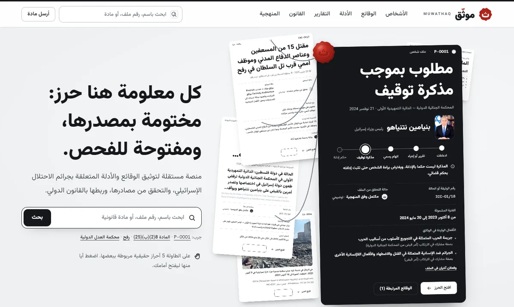
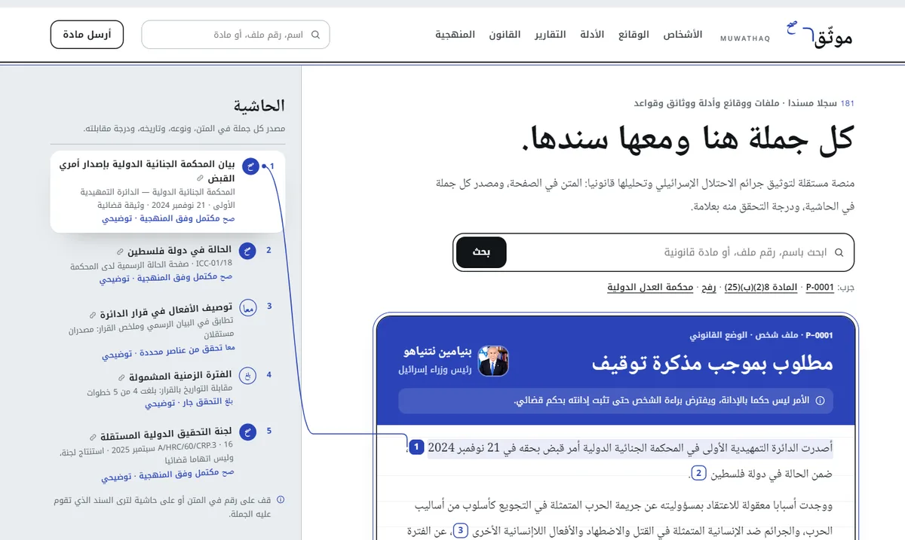

الاتجاه أ
الحرز
كل سجل حرز مختوم ضد العبث، يفض أمام القارئ.
تحريز الأدلة في الإجراءات الجنائية العربية: لفافة بخيط، وختم بالشمع، وبطاقة عهدة.

- الحبر
- الطاولة
- الورق
- الشمع
المبني الآن: الهوية وكل صفحات الموقع (197 صفحة)
موثّق MUWATHAQ · للاختيار
الاتجاهان مبنيان على السجلات الحقيقية نفسها: الأشخاص والوقائع والأدلة والوثائق والقواعد. افتح كل واحد وتنقل فيه، ثم اختر الاتجاه الذي نكمل به كل الصفحات. الاختيار يغير الهوية والإحساس، لا المحتوى ولا المنهجية.

الاتجاه أ
كل سجل حرز مختوم ضد العبث، يفض أمام القارئ.
تحريز الأدلة في الإجراءات الجنائية العربية: لفافة بخيط، وختم بالشمع، وبطاقة عهدة.
المبني الآن: الهوية وكل صفحات الموقع (197 صفحة)

الاتجاه ب
كل جملة هنا ومعها سندها في الهامش.
حواشي المخطوطات العربية وعلامات النساخ (صح، بلغ، معا، خ، كذا)، وهوامش التقارير الحقوقية.

المبني الآن: الهوية والصفحة الرئيسية
| البند | أ · الحرز | ب · المتن والحاشية |
|---|---|---|
| الفكرة | السجل حرز: يلف ويربط ويختم، ولا يفتح إلا أمام القارئ. | الصفحة متن وحاشية: لكل جملة رقم، ولكل رقم سند. |
| الشعار | الكلمة بخط فازيرمتن وشدتها بالشمع الأحمر، وختم شمع عليه حرف الثاء. | الكلمة بخط النسخ ولحقها يخرج إلى الهامش موقعا بكلمة صح، ومربع صح أبيض على اللازورد. |
| الألوان | حبر، وطاولة رمادية باردة، وأحمر الشمع للختم وحده: ختم واحد في كل شاشة. | حبر، وحاشية رمادية باردة، ولازورد الناسخ لكل سند وعلامة. |
| الخط | فازيرمتن لكل النصوص، وريد هات مونو للبيانات. | نسخ للمتن، وكوفي للحاشية والواجهة، وفراجمنت مونو للبيانات. |
| حالة التحقق | حالة الختم: مكتمل، نصفي، ثلاث نقاط، مشقوق للمراجعة. | علامات النساخ: صح، معا، كذا، بلغ، خ، مع كلمتها الواضحة. |
| الوضع القانوني | حبل بخمس عقد من الادعاء إلى الحكم. | سلم مسطر بخمس خانات، الحالية باللازورد. |
| الحركة | خيوط حقيقية تتدلى وتشد بين السجلات المرتبطة، وختم يضغط. | الجملة يغمرها اللازورد، ثم يكتب اللحق منها إلى سندها. |
| الإحساس | مادي وجليل: غرفة أحراز ومحكمة. | علمي وهادئ: صفحة باحث ومكتبة. |
| الخطر | قد يقرأ الختم والشمع قراءة حرفية لاسم موثّق، والأحمر يجب أن يبقى للختم وحده. | إن صغر الهامش أو خجل قرب من شكل الموسوعات؛ علاماته تحتاج دائما كلمة تشرحها. |
نموذج تصميم: حالات التحقق والعهدة في الاتجاهين توضيحية، والوثائق والوقائع والأوضاع القانونية حقيقية ومنسوبة إلى مصادرها.